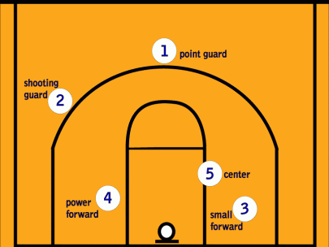

Positioning
Centre
The centre player of the team is usually the tallest and strongest player. They sit under the rim of the hoops and goes for layups and rebounds.
Examples - Shaquille O’Neal, Karl-Anthony Towns, DeMarcus Cousins, Rudy Gobert
Power Forward
Power forwards are generally the second tallest player. Like a centre they are more versatile; working around all positions but up close to the ring.
Examples - Anthony Davis, Draymond Green, Paul Millsap
Small Forward
Usually a shorter player they need to be able to drive for the ring. Must be a consistent shooter to be able to take long shots.
Examples - Lebron James, Kevin Durant, Kawhi Leonard
Shooting Guard
The shooting guard is the team's best shooter usually positioned around the 3 point line. They wait ready for the ball to be kicked out to them for a shot. They will be a threat to the opponent as they will be able to score from anywhere on the court.
Examples - James Harden, Devin Booker, Luka Doncic
Point Guard
Point guards are the best ball handlers on the team and act as a coach for the team on the court. They need to have good court vision as they are incharge of directing plays and organising their team mates.
Examples - Stephen Curry, Russell Westbrook, Chris Paul
